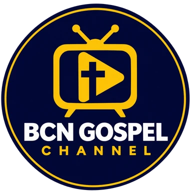
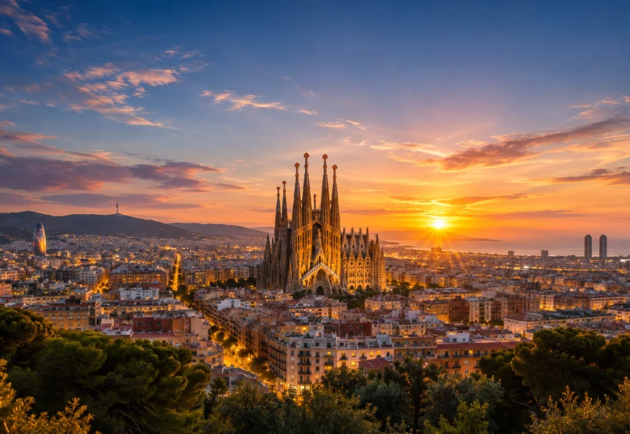
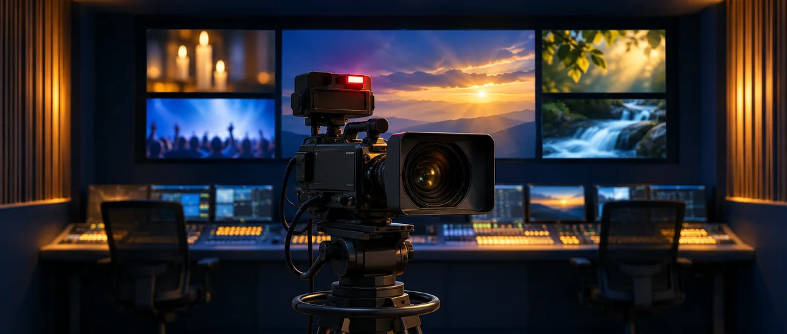
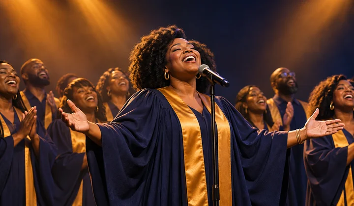
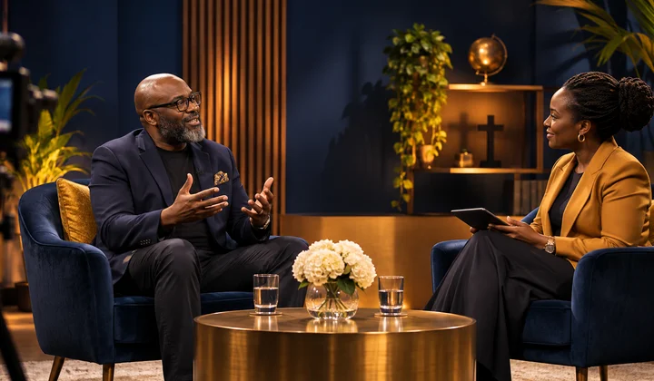
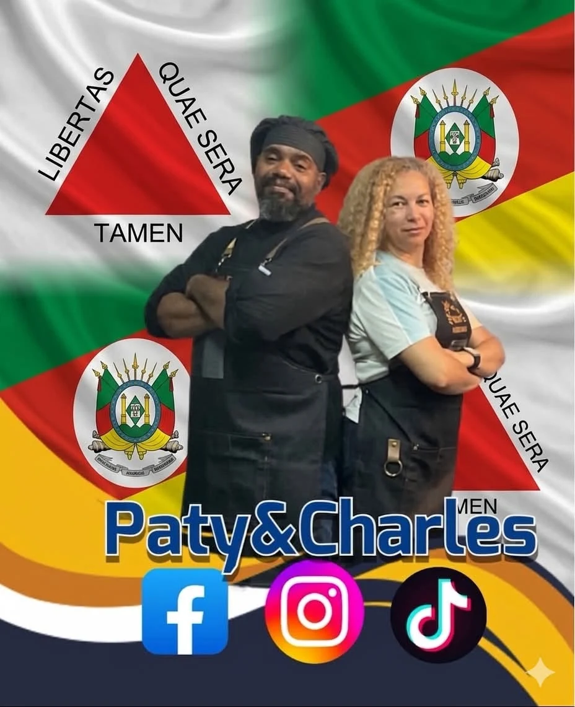
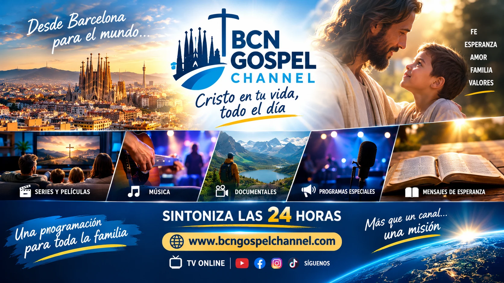
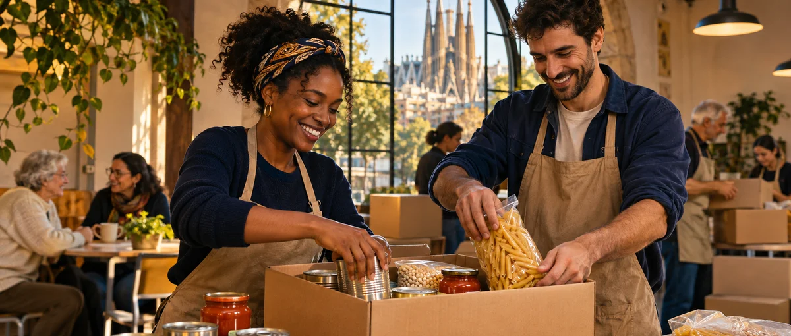
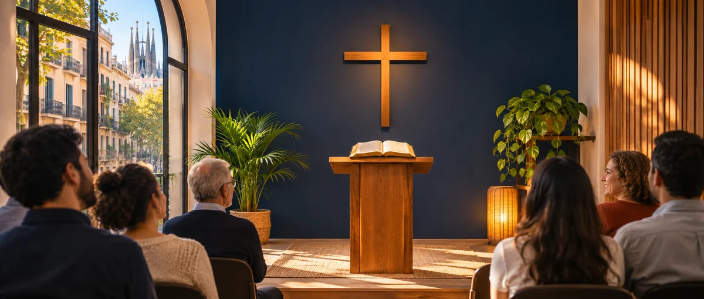

Próximamente
La Otra Mejilla
Un espacio de conversación y reflexión presentado por Charles Calabuig Machado. Previsto para los martes.

Una ventana de esperanza para el mundo
Televisión cristiana desde Barcelona para las naciones
Disfruta de televisión cristiana en directo, música góspel, testimonios y contenidos que inspiran. Desde Barcelona para las naciones.
▶ Ver televisión en directo Explorar programas →
Pulsa reproducir para ver la señal en directo.

Descubre lo que estamos preparando para BCN Gospel Channel.
Muy pronto anunciaremos aquí nuestras próximas películas, series y especiales cristianos, con sus imágenes, sinopsis y fechas confirmadas.
Mientras tanto, disfruta de nuestra señal en directo. No anunciamos títulos ni horarios hasta tenerlos confirmados y contar con los permisos de emisión correspondientes.
▶ Ver televisión en directoConoce los espacios que estamos preparando. Los estrenos y horarios se anunciarán cuando estén confirmados.
Un espacio de conversación y reflexión presentado por Charles Calabuig Machado. Previsto para los martes.
Historias de fe, decisiones y enseñanzas bíblicas.
Relatos de valentía, esperanza y propósito.
Las voces y las historias que marcaron la música góspel.
Historias, música y programas que inspiran. Descubre los contenidos de BCN Gospel Channel sin horarios fijos mientras renovamos la programación.
Películas y series con historias de fe, superación y valores.

Alabanza, adoración y propuestas musicales cristianas.

Entrevistas, reflexiones, testimonios y espacios de actualidad.
Reportajes, enseñanzas y emisiones especiales.
Los contenidos dependen de la programación y de los derechos de emisión disponibles.
Documentales a la carta de BCN Gospel Channel.
Próximamente podrás ver aquí nuestros documentales.

Detrás de cada persona hay una historia que merece ser escuchada. Desde BCN Gospel Channel queremos llevar un mensaje de fe, esperanza y dignidad a los hogares, y también tender la mano a quienes atraviesan momentos difíciles.
Deseamos impulsar, con personas y entidades colaboradoras, iniciativas para conseguir alimentos y ropa, así como facilitar peluquería solidaria y acceso a lugares donde ducharse a personas vulnerables o sin hogar. Son objetivos sujetos a los recursos disponibles, no servicios garantizados.
Actualmente no disponemos de refugio ni ofrecemos alojamiento. Creemos que una palabra puede animar y que un pequeño gesto de solidaridad puede cambiar un día entero.
«Porque tuve hambre, y me disteis de comer»
«Hijitos míos, no amemos de palabra ni de lengua, sino de hecho y en verdad»
«Así que, según tengamos oportunidad, hagamos bien a todos»
CAMPAÑA DESTACADA · RECOGIDA SOLIDARIA DE ALIMENTOS

❤️ Un kilo de comida, un kilo de amor
Recogemos alimentos donados para entregarlos a personas y familias en riesgo de exclusión social, especialmente quienes viven situaciones de vulnerabilidad o carecen de hogar.
Hay personas en riesgo de exclusión social para quienes llenar la despensa es un desafío diario. Un pequeño gesto puede convertirse en una gran ayuda.
Queremos reunir alimentos no perecederos para apoyar a personas y familias en situación de vulnerabilidad: arroz, pasta, legumbres, conservas, aceite y leche de larga duración, siempre en envases cerrados, dentro de su fecha de consumo y en buen estado.
❤️ ¿Quieres donar alimentos? Puedes entregárnoslos en el punto de recogida que anunciaremos o consultarnos para que nuestro equipo valore recogerlos directamente, según la zona y la disponibilidad. Nosotros organizaremos su entrega posterior a personas y familias que los necesiten. ¿Quieres ayudar también como voluntario? Escríbenos para coordinar una entrega o sumarte como voluntario. También buscamos comercios y entidades que quieran participar.
Importante: Punto de entrega: calle Navas de Tolosa, 292, bajos, Barcelona. Cómo llegar: metro L1, parada Navas. Horario de recepción de alimentos: sábados de 19:00 a 21:00 y domingos de 12:00 a 16:00. También puedes consultarnos para que recojamos los alimentos, según la zona y nuestra disponibilidad.
✉️ Quiero colaborar con alimentos
La recogida recibe alimentos no perecederos. El cartel también presenta una forma de colaborar con 1 €.

ETV Media Pro · Desde Barcelona para el mundo
Compartimos una misión: llevar un mensaje de fe, esperanza y dignidad a través de los medios de comunicación cristianos, y tender la mano a las personas que más lo necesitan.
BCN Gospel Channel y Manantial FM forman parte de esta visión, que une comunicación, comunidad y solidaridad.
Una ventana de esperanza para el mundo.

Tu ayuda contribuye a llevar un mensaje de esperanza a más personas.
DonacionesPara colaborar, escríbenos a etvmediapro@gmail.com.

Directorio informativo de iglesias y comunidades cristianas de Barcelona y su área metropolitana. Los datos proceden de páginas públicas de las entidades y directorios; pueden cambiar. Confirma horarios y ubicación antes de desplazarte.
🌐 Iglesia online — comunidad cristiana con actividad por internet, de momento sin sede física de atención al público.
Responsable: Pastora Rosalba Toquica Castro.
☎️ +34 632 23 40 18 — Pastora Rosalba
🕒 Horarios y enlaces de reuniones online: pendientes de confirmar.
📍 Calle Navas de Tolosa, 292, bajos, Barcelona
🚇 Metro L1, parada Navas
☎️ +34 664 31 69 50 (contacto de la iglesia)
🕒 Horarios de reuniones:
Martes 20:00 — Culto de oración.
Jueves 20:00 — Reunión de varones.
Viernes 20:00 — Enseñanza bíblica.
Sábado 19:00 — Culto de jóvenes.
Domingo 12:00–14:00 — Culto familiar.
📍 Carrer de Maria Victòria, 11, 08014 Barcelona
🕒 Domingos 18:00 (confirmar antes de asistir)
📍 Passatge de Matilde de Gaiolà, 8-12, 08013 Barcelona
🕒 Domingos 11:00 (confirmar antes de asistir)
📍 Carrer del Cisell, 28, 08038 Barcelona
🕒 Domingos 10:30 (confirmar antes de asistir)
📍 Carrer dels Almogàvers, 78, local 2, 08027 Barcelona
🕒 Domingos 11:00 (confirmar antes de asistir)
📍 Carrer de Verdi, 191, 08012 Barcelona
📍 Carrer de Ginebra, 35, 08003 Barcelona
🕒 Domingos 12:00 (confirmar antes de asistir)
📍 Carrer de les Agudes, 100, 08033 Barcelona
🕒 Domingos 11:30 (confirmar antes de asistir)
📍 Carrer de la França Xica, 29, 08004 Barcelona
📍 Carretera Santa Creu de Calafell, 39, 08830 Sant Boi de Llobregat
📍 Gran Via de les Corts Catalanes, 133, 08014 Barcelona
Iniciativas de comunicación vinculadas al proyecto: Manantial FM (radio online) y BCN Gospel Channel (televisión online). Se muestran como medios de comunicación, no como iglesias.
¿Representas una iglesia o comunidad y quieres añadir o corregir sus datos? Escríbenos para actualizar el directorio.
Última revisión de fuentes: 8 de noviembre de 2026. La inclusión no implica aval de BCN Gospel Channel.
Tres medios para compartir música, historias y esperanza desde Barcelona.